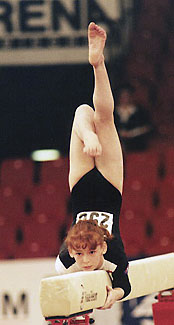

Zuzana Sekerova (SVK)
2000 and 2004 Olympian

Zuzana was born on September 25, 1984 in Trnava, Slovakia. Visit Zuzana's excellent website for more information.
Competition Results
1995
Jr. ITA-SVK-UKR: 9th AA
1996
Jr. European Championships: 14th AA
1997
Intl. Junior Championships: 28th AA
Jr. Intl. Hippolyth Trophy: 1st AA
Jr. Trnava International: 4th AA
1998
Barborka International: 3rd AA
Jr. European Championships: 11th AA
World Youth Games: 13th AA
1999
Como Cup: 3rd AA
European Youth Olympic Days: 5th Team, 35th AA
Glasgow Grand Prix: 7th FX
GBR-SVK Dual Meet: 1st AA
Intl. Championships of Romania: 11th AA
Trnava International: 4th AA
2000
European Championships: 13th AA
Intl. Championships of Romania: 14th AA
Olympic Games: 59th AA (prelims)
2001
Siska International: 4th AA
2004
Copa La Serena: 1st B
European Championships: 20th AA, 6th B
Friendship Classic: 6th AA
Olympic Games: 47th AA (prelims)
SUI-POL-BLR-SVK: 4th AA
2005
American Cup: 9th V, 10th B, 12th UB
Brno Grand Prix Mixed Pairs: 3rd Team
University Games: 14th AA
This page was created on December
30, 2006.
© Gymn Forum